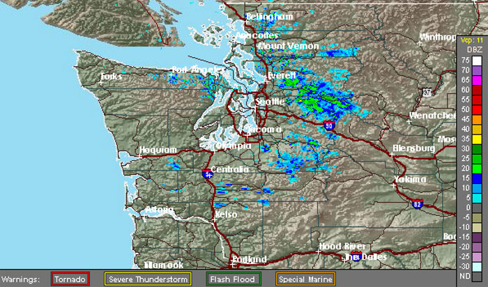

<CANVAS>
<CANVAS> can be used for:
- Dynamic graphics
- Online and offline games
- Animations
- Interactive video and audio
<canvas id="example" width="150" height="150">
</canvas>
function draw() {
const canvas = document.getElementById('canvas');
if (canvas.getContext) {
let ctx = canvas.getContext('2d');
ctx.beginPath();
ctx.arc(75, 75, 50, 0, Math.PI * 2, true); // Outer circle
ctx.moveTo(110, 75); // Moves the pen
ctx.arc(75, 75, 35, 0, Math.PI, false); // Mouth (clockwise)
ctx.moveTo(65, 65); // Moves the pen
ctx.arc(60, 65, 5, 0, Math.PI * 2, true); // Left eye
ctx.moveTo(95, 65); // Moves the pen
ctx.arc(90, 65, 5, 0, Math.PI * 2, true); // Right eye
ctx.stroke();
}
}
And a little about the vaunted animation

function draw() {
const canvas = document.querySelector('canvas');
canvas.width = window.innerWidth;
canvas.height = window.innerHeight;
const c = canvas.getContext('2d');
const circlesCount = 800;
const maxRadius = 40;
const circleArray = [];
const colorArray = [ '#046975','#2EA1D4','#3BCC2A' ];
const debounce = (func) => {...}
const init = () => {...}
window.addEventListener('resize', debounce(() => {...}));
const Circle = function(x, y, dx, dy, radius) {...};
const animate = () => {...};
init();
animate();
}
const animate = () => {
requestAnimationFrame(animate);
c.clearRect(0, 0, innerWidth, innerHeight); // clear shapes
for (let i = 0; i < circleArray.length; i++) {
circleArray[i].update();
}
}
Basic animation steps
- Clear the canvas
- Save the canvas state
- Draw animated shapes
- Restore the canvas state
Browser Support for Canvas:

When and why?

What HTML5 Canvas Can Be Great For
Ray Tracing
Ray tracing is a technique for creating 3D graphics.
Here’s a raytracer application in action.
Drawing a significant number of objects on a small surface
Pixel replacement in videos
What HTML5 Canvas Is Not So Great For
Scalability
Accessibility
No reliance on JavaScript
Advantages:
- Canvas is really interactive
- With Canvas, you always have the option of saving images as .png or .jpg
- Any object that you draw on the canvas can be animated
- Very efficient in dealing with multiple elements
Disadvantages:
- Canvas is dependent on resolution
- Complex visualizations
- It has Poor text rendering capabilities
- It can be slow when drawing to large areas
Instead of a thousand words